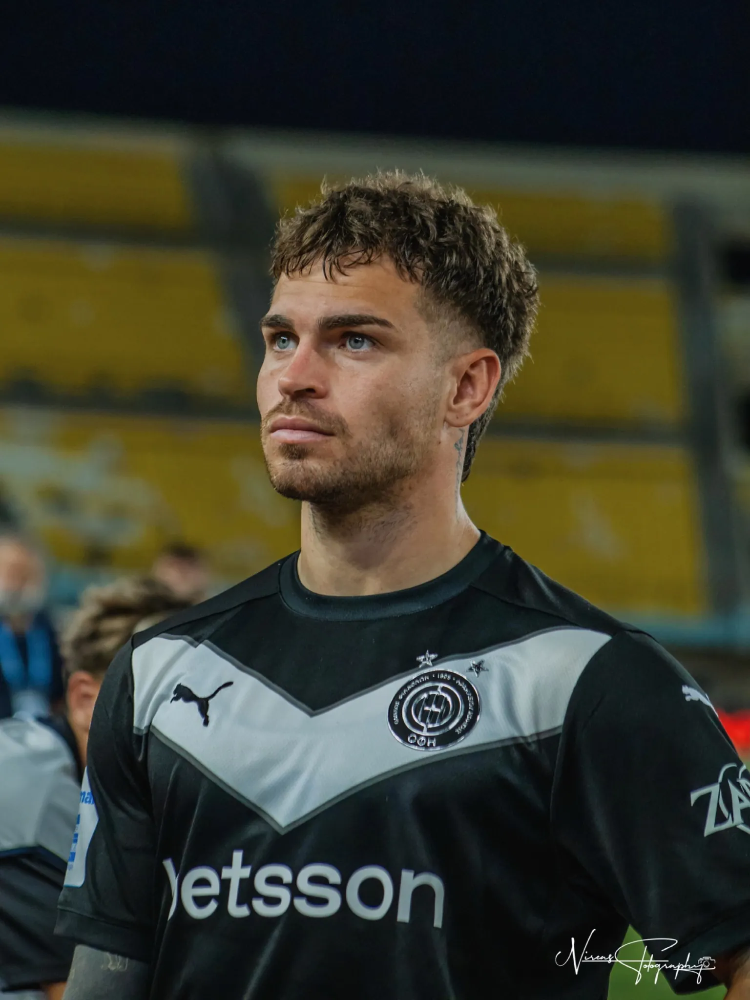
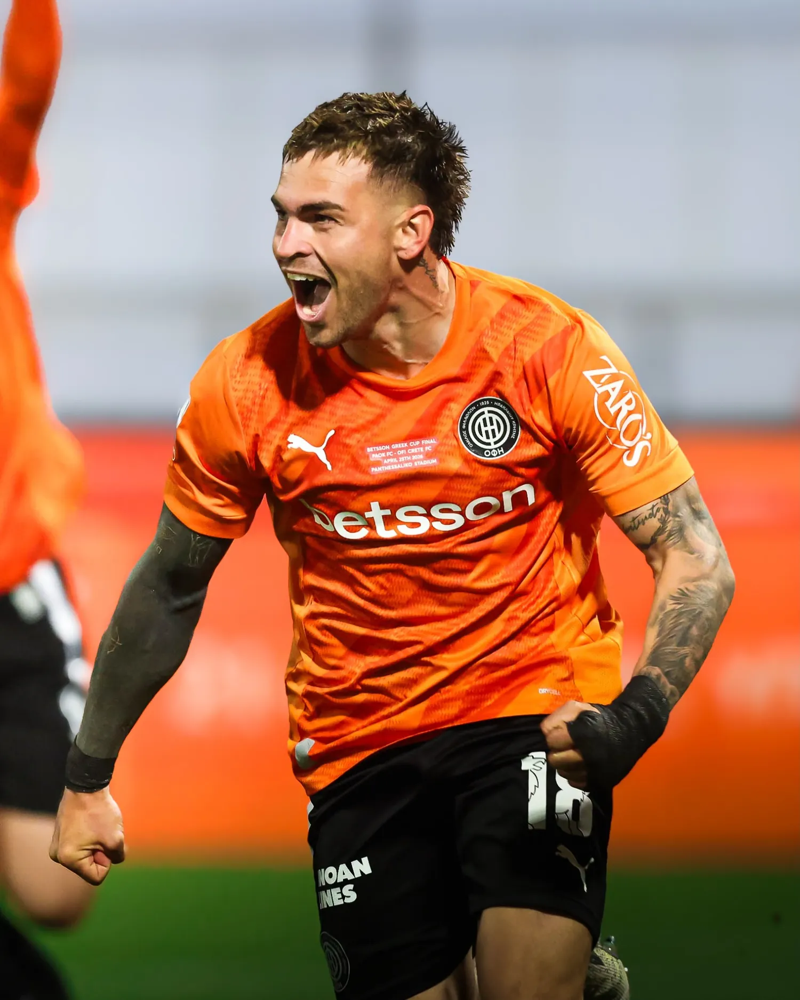
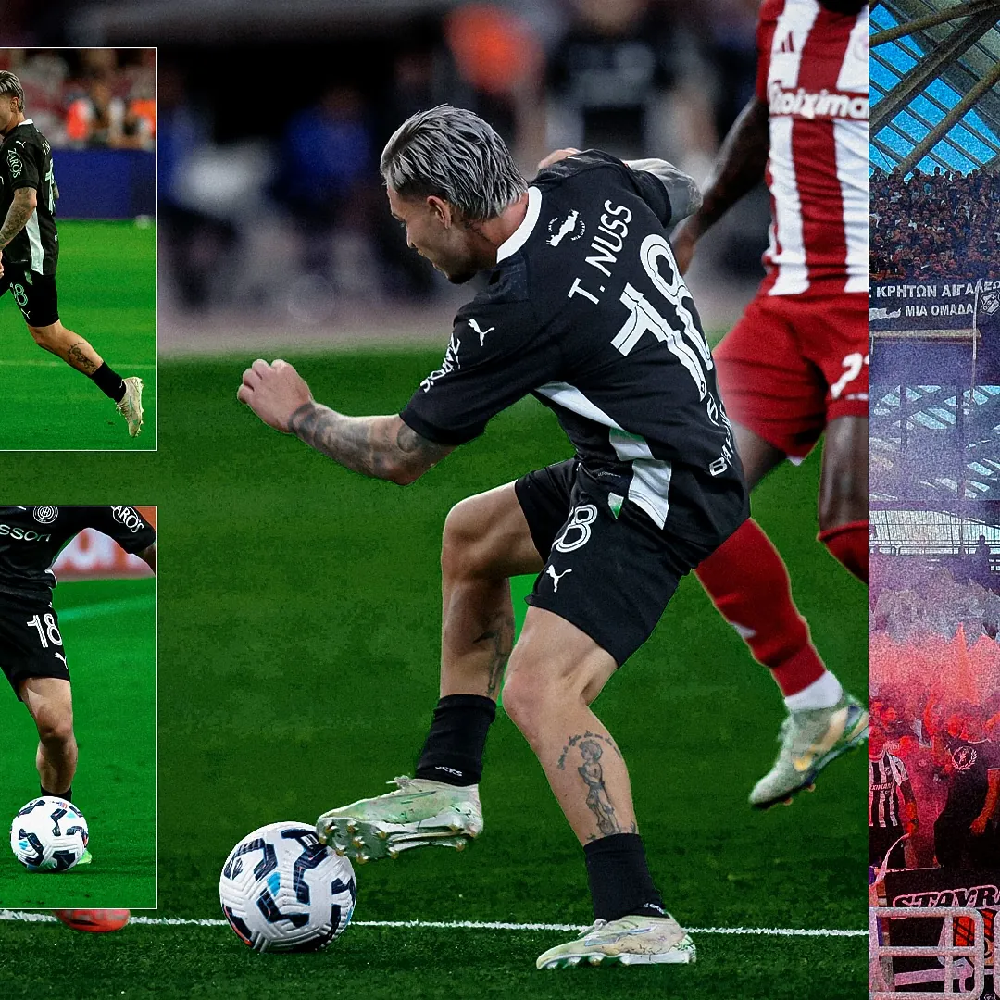
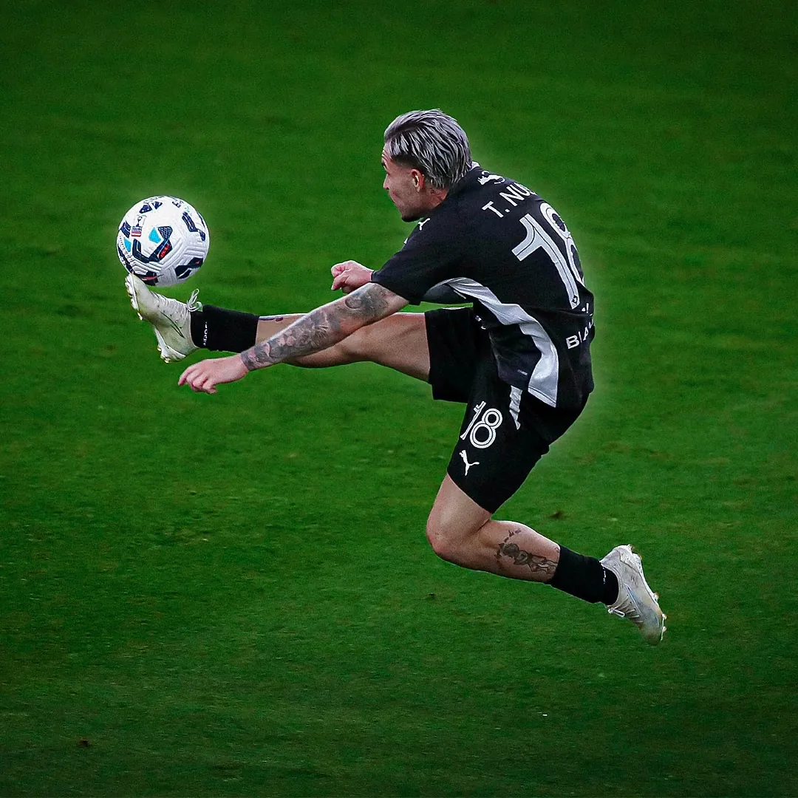
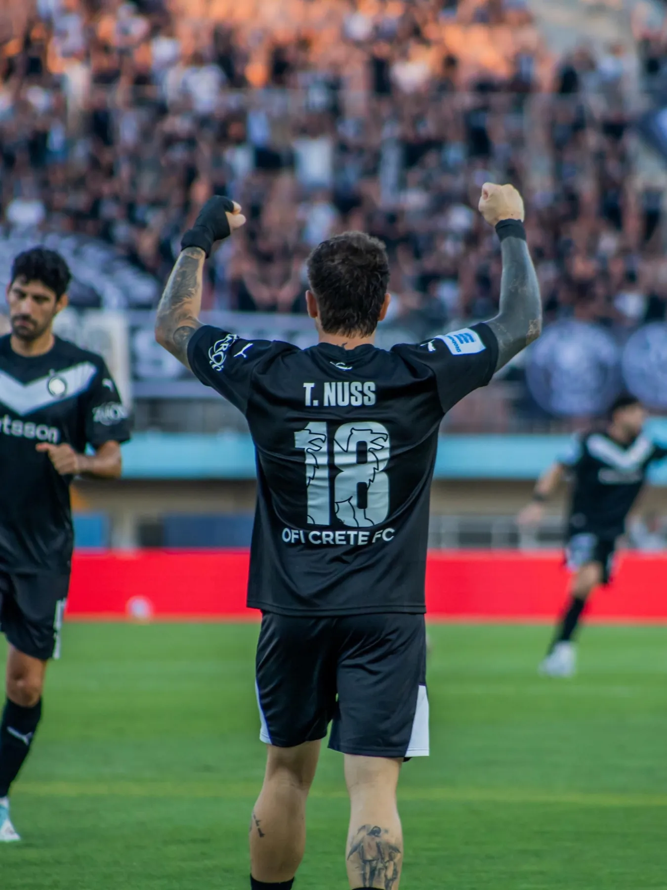

PLAYER PROFILEOFI / 18
18

ARG ◆ LW
THIAGO
NUSS
NO. 018 / CONCEPT CARD
De Cañuelas al fútbol europeo.
La historia sigue en juego.
Thiago Thomas Nuss. Futbolista profesional argentino, nacido en Cañuelas. Hoy, con la camiseta del OFI Creta en la primera división de Grecia.
Extremo izquierdo de perfil ofensivo, diestro y con versatilidad para ocupar distintas posiciones en ataque.
RECORRER SU HISTORIA ↗
Una lectura visual de su identidad futbolística, con estética de videojuego. Los rasgos están basados en la descripción pública de su club, no son puntuaciones de EA SPORTS FC.

Una de las características de su juego destacadas públicamente por el OFI Creta.
De las inferiores en Argentina al fútbol europeo. El recorrido que construyó su carrera.
Primeros pasos como futbolista profesional.
Etapa de desarrollo y experiencia en el fútbol argentino, incluyendo un paso por Atlético de Rafaela.
Una nueva etapa en el fútbol de primera división.
Llegada a Grecia a préstamo desde Argentinos Juniors.
El club ejerce su opción de compra. Nuevo contrato anunciado hasta 2028.
Trayectoria y fechas contrastadas con comunicaciones del OFI Creta y anuncio de incorporación definitiva.
Es el camino. Es de dónde venís.
Y es todo lo que viene.
Jugadas, goles y momentos para volver a ver. La sección está lista para cargar los videos que nos comparta Thiago.

01 / MATCHPLAY
02 / SKILLS
03 / THE MOMENTPARTIDOS / MOMENTOS / PASIÓN
Thiago Nuss. Cañuelas, Argentina.
OFI Crete Football Club.